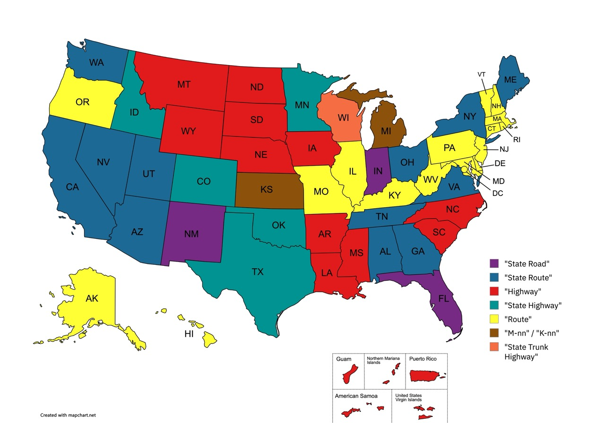

States
Territories
States
Federal district
Florida, Indiana, and New Mexico.
There are 12 states use the term "State Route", including Alabama, Arizona, California, Georgia, Maine, Nevada, New York, Ohio, Tennessee, Utah, Virginia, and Washington.
The term "Highway" is used by Arkansas, Iowa, Louisiana, Mississippi, Montana, Nebraska, North Carolina, North Dakota, South Carolina, South Dakota, and Wyoming, plus the territories of American Samoa, Guam, Northern Mariana Islands, Puerto Rico, and U.S. Virgin Islands.
Colorado, Idaho, Minnesota, Oklahoma, and Texas.
There are 16 states and 1 federal district use the term "Route", including Alaska, Connecticut, Delaware,Hawaii, Illinois, Kentucky, Maryland, Massachusetts, Missouri, New Hampshire, New Jersey, Oregon, Pennsylvania, Rhode Island, Vermont, West Virginia, and the District of Columbia.
Michigan (M-nn) and Kansas (K-nn).
Wisconsin is the only state using the term "State Trunk Highway".
The most commonly used highway naming style is "Route," used by 16 states plus the District of Columbia.
"State Road", "State Route", "Highway", "State Highway", "Route", Letter-number systems ("M-nn", "K-nn"), and "State Trunk Highway".